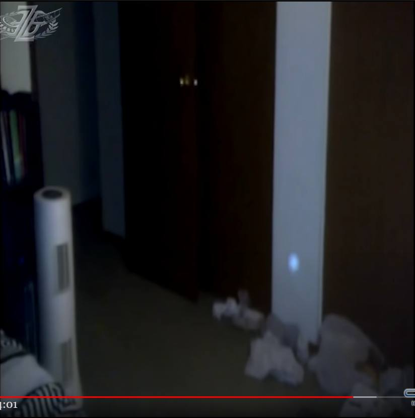
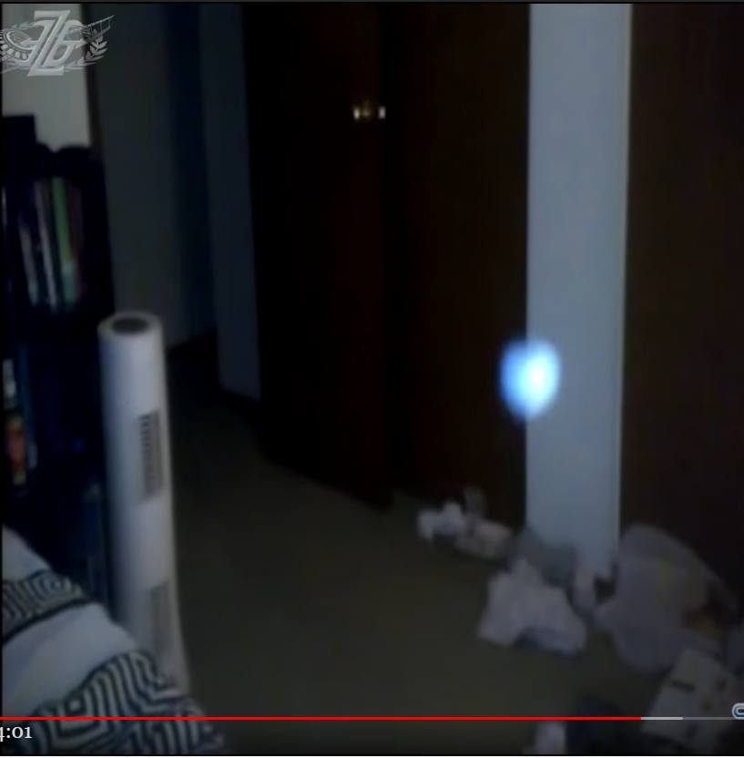
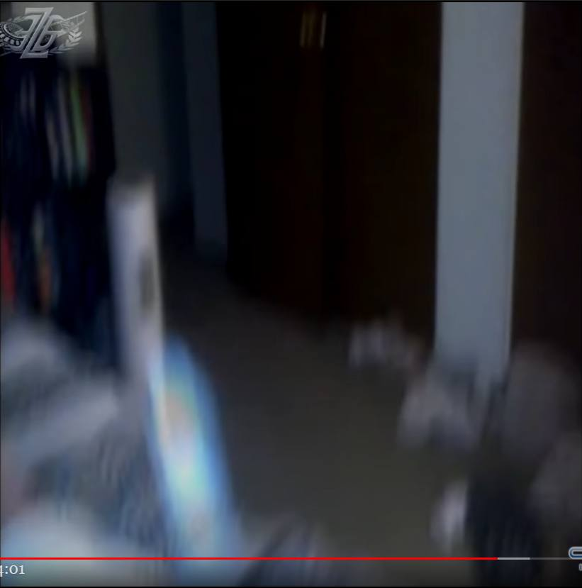
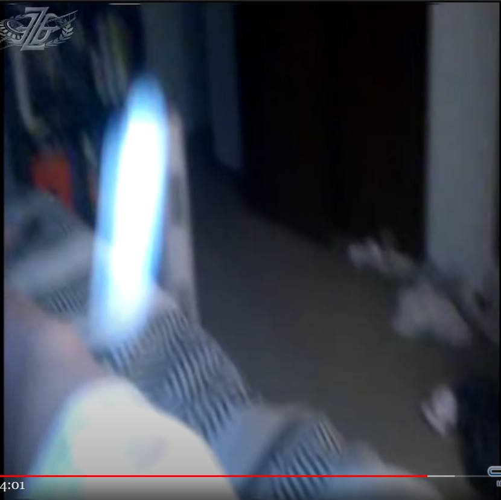
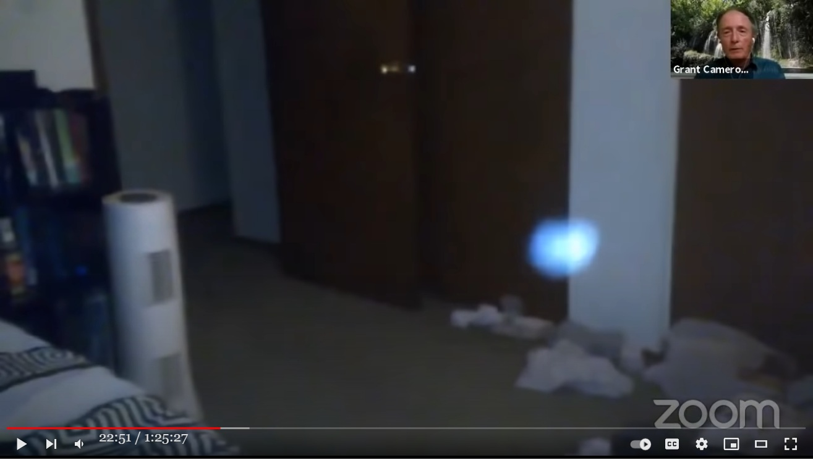
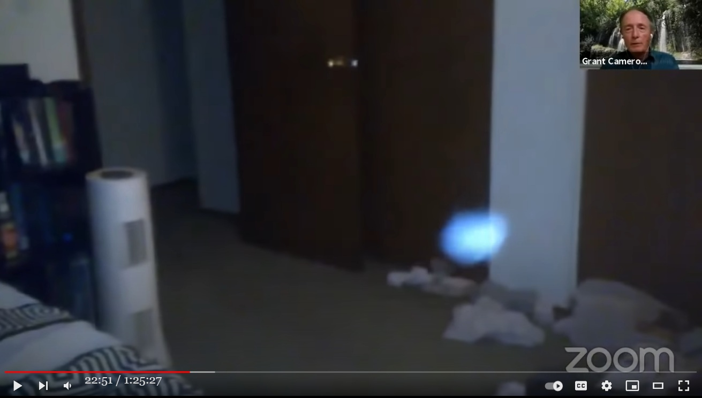
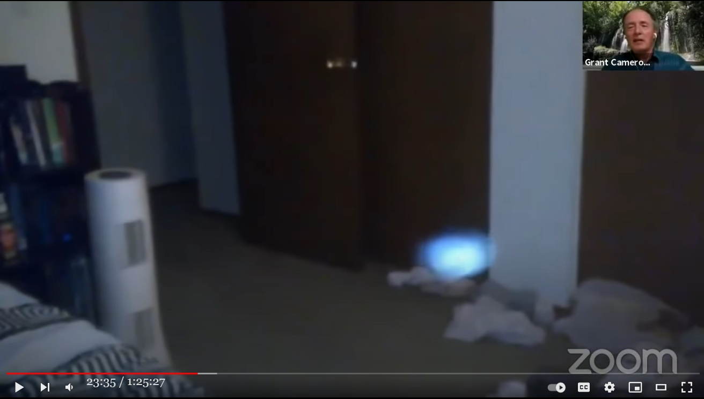

Video of orb that entered the body and cured tumors → found to be faked.

History
(2022-01-07) Addition (2021-08-21) Addition (2021-03-17) CreatedPast articles that provide background information
(2022-01-07 begin)▼Clik to expand
Preface
- Kathleen Marden (private UFO researcher) discusses in her lecture a video she obtained. The video was taken by a Canadian man (M). - This video footage taken by M has been discussed in a previous article below. Kathleen Marden : Video of the scene where orb jumps into the body. Lymphoma healed. (2018-09-25) (Japanese) - At the time of the past article, I didn't pay much attention to the video and didn't notice the fabrication. But this time I noticed a fabrication.main point
40:35-- - The following information was obtained from a Canadian man (M) who contacted me a few months ago. - M had a large tumor on the back of his neck. So he was scheduled to have surgery at the hospital to remove the tumor. One late night before the surgery, he was lying in bed. An Orb appeared and entered her body. When he woke up the next day, he found that the tumor had shrunk to 1/5 of its original size and Orb had cured it.Still image cut from video










My view
- Perhaps this video is a fabrication. The reason is as follows. (2022-06-27 begin) - When an unknown orb rushes toward your body, anyone would try to avoid it by spinal reflex. However, this photographer did not even twitch. Therefore, there is no blur in the video until the very last moment. This is impossible. - The first scene is also odd. It seems that the photographer anticipated exactly where the orb would appear and pointed the camera at that spot beforehand. (2022-06-27 end)Auto-generated voice transcription
▼Clik to expand
this individual who wants to remain 40:16 anonymous 40:17 uh contacted me a couple of months ago 40:20 and he had developed this like growth on 40:23 the side of his neck 40:24 and it was growing larger and larger and 40:27 at first i said well 40:28 go to your doctor maybe it's an 40:30 infection of some kind 40:32 he went he went on a course of 40:33 antibiotics it just kept growing larger 40:37 and finally there was a biopsy done and 40:39 he was taken before 40:41 a medical team up in canada they were 40:44 preparing 40:46 for for surgery 40:49 and they thought that it was probably 40:52 cancerous and so he was writing to me 40:56 he was afraid that he was going to die 40:59 and i said i'll tell you what let's 41:02 start 41:02 trying to heal you you ask for 41:06 healing i'll ask for healing i'll ask 41:08 other experiencers to ask for healing 41:12 and what i'm going to show you next is 41:15 what he videoed in his bedroom 41:18 at one o'clock in the morning 41:24 oh 41:27 okay 41:31 it's always played before here we go 41:37 no there's no sound do you see that or 41:40 would you like to see it again okay 41:45 okay let's get back to that screen and 41:50 it's not doing it again let's try this 41:53 okay watch very carefully 42:00 he had a cell phone he always keeps his 42:02 cell phone next to him 42:03 in bed let me tell you what happened 42:06 next 42:06 he slept until one o'clock in the 42:08 morning i mean in the afternoon 42:10 very very long sleep and when he woke up 42:15 he said something happened during the 42:16 night he sent me the video 42:18 which he gave me permission to use and 42:20 he said 42:22 my growth is smaller in all it was only 42:25 one-fifth the size that it had been and 42:28 by the time he went 42:30 in for surgery the tumor was completely 42:33 gone 42:34 and there were two necrotizing nodes 42:37 that was it amazing storyVideo of the lecture (1:04:01)
The 60 Year Anniversary of the Hill E.T Encounter... The Inside Story!Note that came with the video.
Today, 60 years after the UFO abduction of Betty and Henry Hill, more and more people are convinced that UFO's are real and that governments are covering up their existence. The 1961 abduction of the Hills stirred worldwide interest, primarily because of the book The Interrupted Journey, the subsequent media coverage and a 1975 TV movie, The UFO Incident. The case is mentioned in almost all UFO abduction books. Kathleen Marden, Betty Hill's niece, shares details from her discussions with Betty and from the evidence of the UFO abduction. She, also, looks at the Hill's riveting hypnosis sessions about their time onboard the spacecraft. This is an archived show Filmed by Contact in the Desert UFO Conference All content on this channel is licensed, and or produced by Zohar Entertainment Group/Awakening Expo/Phenomena Magazine.(2021-03-17)
(2021-08-21 begin)Supplement
- Grant Cameron mentioned this in a glimpse in a recent video. This Canadian man died as a result of an epidemic pandemic. (2021-08-21 end)
Preface
- During a recent remote meeting, Grant Cameron brought up this same orb video again and played back the video, which Grant Cameron claims is the best evidence of treatment by orb (*1). - This time, I saw the replayed video again and noticed a scene that is a definite evidence of fabrication in a different part of the video than the cut-out video in the past article above, so I will record it. - In addition, I will also add an audio transcript (automatically generated) that talks about the shooting situation.(*1)
- The purpose of this remote meeting is to promote the idea that "orb is good, not evil." The circumstances behind this are as follows. In a recently published book ("Skinwalkers at the Pentagon") and George Knapp makes the following claims: - There have been cases in which military intelligence personnel who visited the Skinwalker ranch were possessed by evil spirits, which then haunted their homes, causing a number of bizarre phenomena. In addition, there have been cases of serious physical harm. - Thus, orb is an evil entity that does terrible harm to human beings. - The backlash against those claims and statements by a particularly radical faction (Grant Cameron, Alan Steinfeld, Nicole Sakach, Preston Dennett) of the UFO industry's spiritually biased mainstream was the motivation for this remote meeting. - Therefore, "orb is not evil, orb is good, there are many cases of ET transforming into orb, there are many cases of orb healing humans," etc., are appealed to in this remote meeting. - To top it all off, "orb is the incarnation of a good evolved consciousness, orb may be our original form. I hope so..." and so on.main point
- Grant Cameron describes the scene where the blue-orb jumps into a prone person.Auto-generated voice transcription
▼Clik to expand
21:41 and here's the famous healing orb so you 21:43 have the thing where the guy gets uh you 21:44 know zapped with the uh you know the 21:47 thing coming through the car or whatever 21:48 and i always maintain you've got to look 21:50 at your intention that if you're walking 21:52 around with special forces and guns at 21:54 skinwalker ranch get ready because it's 21:56 got to do with a lot what to do with 21:57 your intention so here he is and he had 22:00 cancer a number of times and he had 22:02 cancer had lymph node cancer he had this 22:04 huge uh tumor on his neck and he's going 22:07 for an operation on the tuesday this 22:09 happens on the sunday morning and i said 22:11 are we actually praying were you 22:12 actually talking to them to try to get 22:14 the healing and he said yes i was and 22:16 here's the the actual video that he has 22:18 of this um and he plays he's got it in 22:21 slow motion and it actually comes down 22:23 the wall in some of the videos if you've 22:24 got a good screen you can actually see 22:26 this thing come down the wall 22:28 and he plays it 22:30 so it'll come down between and he said 22:31 he was very embarrassed that his clothes 22:33 were on the floor all dirty clothes so 22:34 it comes down the wall you can actually 22:35 see it coming down the wall 22:38 it goes into his dirty clothes then it 22:39 starts to get big there it is you can 22:41 see him down there's a wall that's 22:42 coming into a dirty clothes at the thing 22:44 now you see it's starting to get big and 22:46 he comes up and he's filming he's 22:47 filming with this with his camera 22:49 and it comes up 22:51 wow 22:52 and it goes up 22:55 and it goes into his body and he starts 22:56 swearing and he had to pull the video 22:58 they had to pull the uh the video off or 23:00 the the audio off because he started 23:02 swearing and he was yelling or whatever 23:03 and then he he said he goes into the 23:05 bathroom shortly after that and this big 23:07 tumor is is on his neck is gone and so 23:11 he's he's he he goes to the oncologist 23:13 they're gonna do the operation on the 23:14 tuesday i think and he goes to 23:16 oncologist the oncologist said what 23:17 happened he said oh i just went away and 23:19 the oncologist said 23:20 it can't just go away what do you mean 23:22 just went away he said i think it went 23:23 away sunday morning 23:25 and he took it to his regular doctor who 23:27 knew what was going on and his doctor 23:28 kept making him play this over and over 23:30 and over again so you have this thing 23:32 you can talk about the story but but 23:34 this is this healing thing where uh he 23:36 had this uh and they they took the lymph 23:38 nodes out but there was no cancer they 23:39 were there was just uh small lymph nodes 23:41 they took them out so it was all over so 23:43 that's the uh the whole thingVideo(1:25:27)
GRANT CAMERON Nice Orbs and Poking BearsCutout still of the scene where the evidence of fabrication is seen.
- The scenes cut out as stills below are easy to miss (in fact, no one should have pointed out that this orb video is a fabrication. At least not that I know of), but they are all conclusive evidence of fabrication. 

Method of fabrication
- The fabrication method was to illuminate the walls and floor of the room with a strong light source emitting blue-white convergent light, which was then captured by a video camera. In this method, the position of the light source and the camera inevitably shifted, albeit slightly. Therefore, when there is a difference between walls and floors (e.g., walls and pillars, walls and floors, bed sheets and their backgrounds), the difference between the illuminated areas appears as the bending surface of the reflected light.Illustrating the evidence
- In fact, the refractive surface in question can be seen in the bumps in the still image cropped above. - If you look carefully at the still image above, you should be able to see it, but below is an illustration of the area of interest. - Part 1 - Part 2 - Part 3 - Part 4 (2022-01-07 end)
Thanks
- Translated with www.DeepL.com/Translator (free version)
(2022-06-27 translate)
First published article (Japanese)
体に Orb が入り込み、腫瘍が快癒。その Orb の動画 （→ 確実に捏造 HOAX：途中3） (2022-01-07)
Degree of completion of this article: